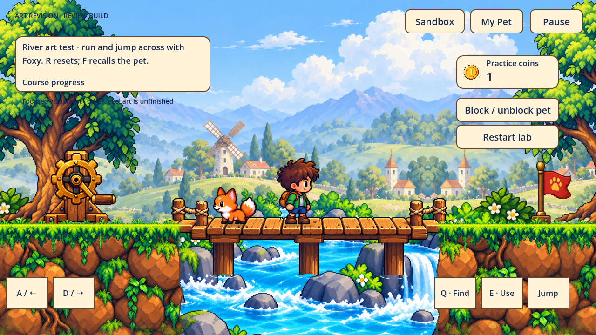
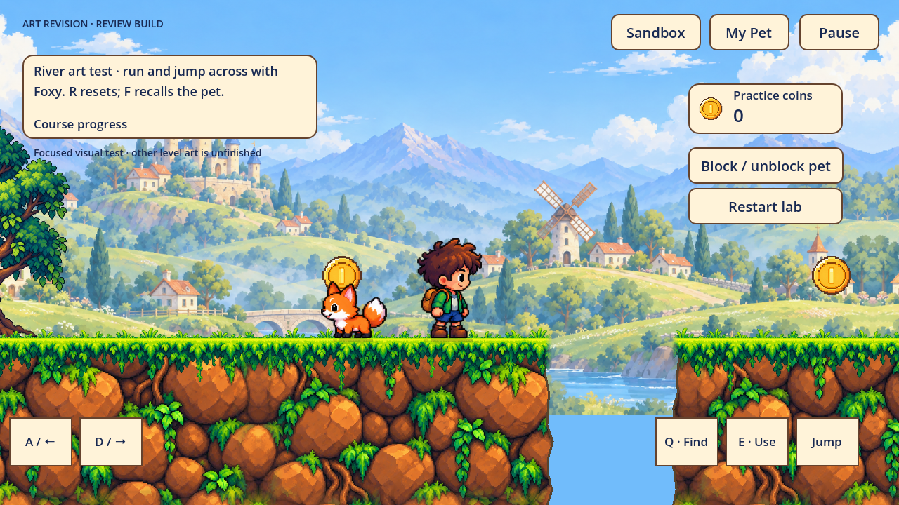
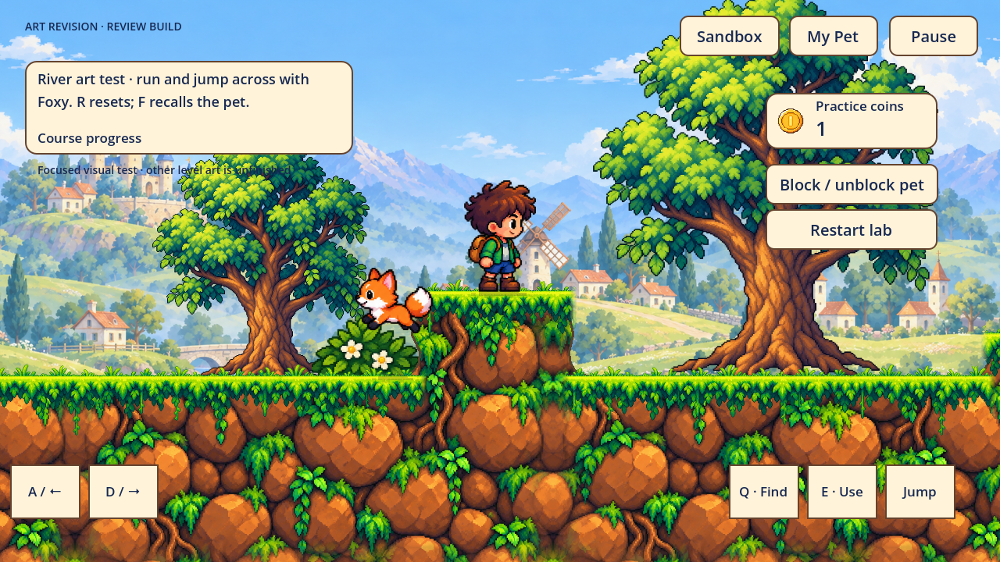
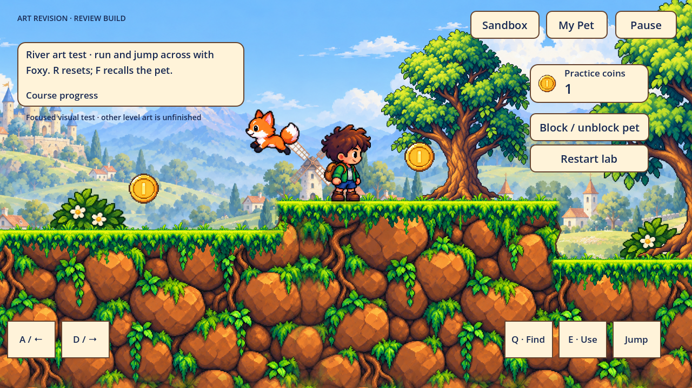
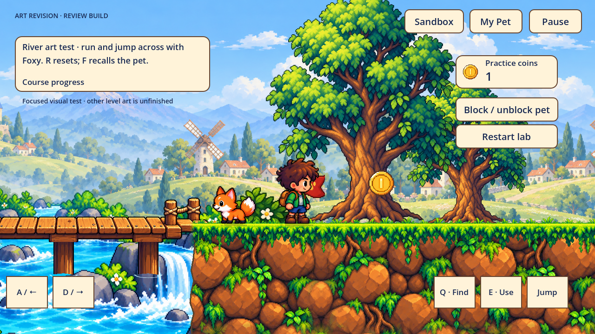
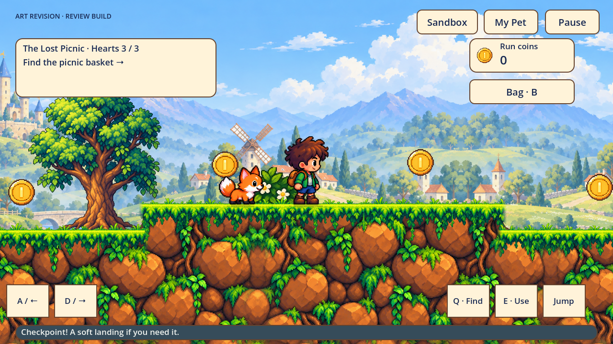
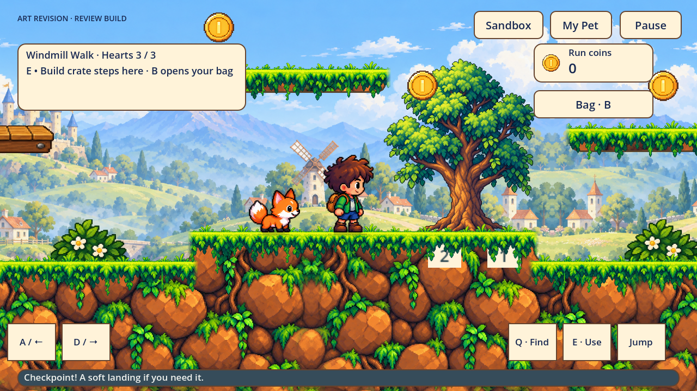
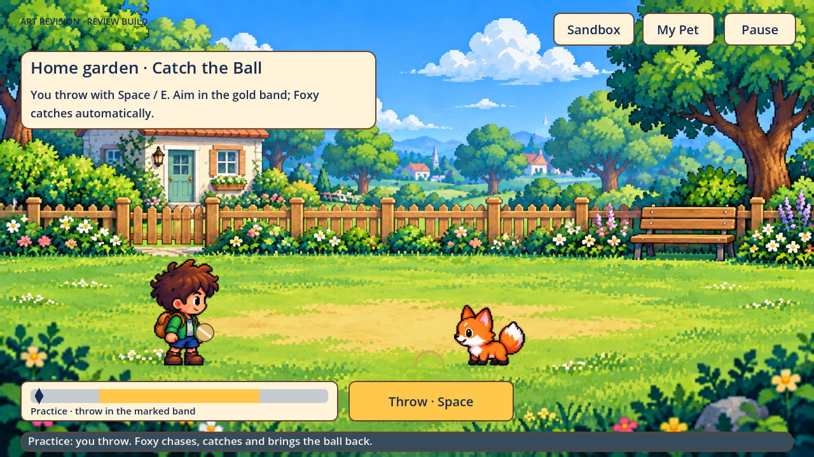
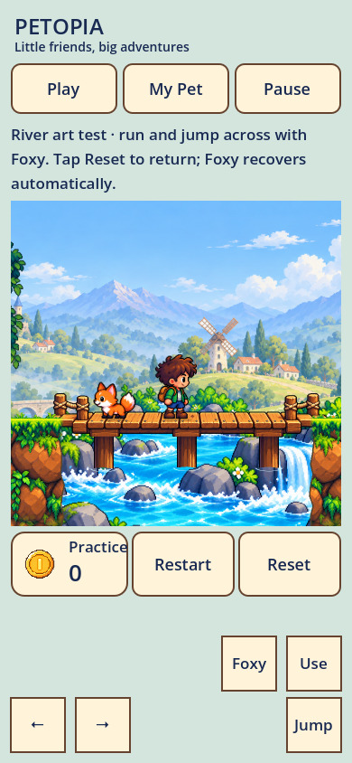

גרסת בדיקה מתוך המשחק. הגרסאות הקודמות נדחו; זו מועמדת חדשה לבדיקה, ולא עיצוב שאושר. הממשק, מכלול האנימציות והעיצוב הייחודי לאורך השלבים עדיין אינם גמורים.
הכניסה הישירה היא Play Art Review.command בתיקיית הפרויקט. היא פותחת מקטע ליד הידית בפרופיל בדיקה נפרד. לחצו Use / E לפתיחת הגשר; תנועה בחצים או A/D וקפיצה ב-Space. יש כפתורי מגע ומצב לאורך.
המקטע הנוכחי בפועל

קרקע מחוברת עם שפת דשא עמוקה יותר, איור סלעים עם הצללה ברורה, שורשי עצים מעוגנים, ועמודי גשר שנכנסים למים. התמונה מציגה את ממשק הפיתוח הקיים.
הקלטת משחק: שימוש בידית, ריצה עם פוקסי, קפיצה ונחיתה. נלכדה בקצב סימולציה קבוע 60Hz והוצפנה ב-30fps, עם אפשרות הפחתת תנועה מופעלת. הידיים והרגליים נשארות בגוון עור חם; תנועת הריצה אינה קפואה בגלל ההגדרה.
בדיקת חיבורים בכמה נקודות
דגימות של הרינדור המשותף בפריסות הקיימות. הן אינן מעידות שעיצוב ייחודי ומגוון לכל המסלול הושלם. הרחבת תוכן נוספת נעצרה עד לבדיקה של המקטע השלם.

פער במסלול · צילום מתוך המשחק
מכשול נמוך · צילום מתוך המשחק
חיבורי הגדות · צילום מתוך המשחק
דגל ומטבע · צילום מתוך המשחק
דגימה מהפיקניק · צילום מתוך המשחק
דגימה מהשלב השני · צילום מתוך המשחקגן הבית ותצוגה לאורך

גן הבית נפרד מההרפתקה; אנימציות המשחק והעיצוב הסופי עוד דורשים עבודה.
תצוגה לאורך עם כפתורי מגע; בדיקה במכשיר נייד ממשי עדיין פתוחה.